李威辰（Wei-Chen Li，1989年生，現居台中），國立清華大學生物資訊與生物結構研究所碩士畢業。主要以攝影為創作媒材，關注城市與鄉村之間的生活差異及環境變遷。作品常結合街拍與人工智慧影像生成技術，探討真實與虛擬的交融。他將跨領域的生物資訊背景融入影像創作，帶來獨特的觀察視角與科技應用。
2024年參與的展覽包括：《IN & OUT 內外之間》當代攝影展、上海國際攝影節、台中藝術博覽會與ART TAIWAN｜SKM PHOTO 攝影藝術博覽會。
2020
2021
2023
2024
Wei-Chen Li (born in 1989, based in Taichung) holds a Master's degree in Bioinformatics and Structural Biology from National Tsing Hua University. His primary medium is photography, focusing on lifestyle differences and environmental changes between urban and rural areas. Combining street photography with AI-generated imagery, Li explores intersections between reality and virtuality. His interdisciplinary background in bioinformatics uniquely informs his photographic practice, providing nuanced perspectives and technological innovation.
In 2024, his works were exhibited at various events, including the "IN & OUT Contemporary Photography Exhibition," Shanghai International Photography Festival, Taichung Art Fair (Avocado booth), and ART TAIWAN | SKM PHOTO.
2020
2021
2023
2024
回顧近年的創作，我發現「自然」與「山」的意象持續貫穿我的作品。從早期的《夜遊》與《犬山記》，到後來的《鐵山誌》，以及最新的《模糊邊界》，我透過不同媒介持續探索人與自然的關係。
《夜遊》捕捉鄉下夜晚的神秘與野性，表達了環境對我心理層面的影響。《犬山記》透過日常散步，發現並記錄家鄉被遺忘的山地景觀。《鐵山誌》則從個人與家族經驗出發，深入挖掘土地與歷史之間的對話。
近期的《模糊邊界》運用AI技術，重新詮釋自然元素，探討虛實交錯的新型山水關係。
本次展覽「尋山問境」即試圖串聯這些創作，邀請觀眾共同體驗自然、歷史與數位之間的多重對話。
Reflecting on my creative journey over recent years, I've noticed the persistent imagery of "nature" and "mountains" running throughout my works. From my earlier projects Night Stroll and Yellow Kid, to the later Tie-Shang Chronicles and my most recent series Blurred Boundaries, I have continuously explored the relationship between humans and nature across various media.
Night Stroll captures the mystery and wildness of rural nights, expressing the profound psychological impact the environment has on me. Yellow Kid records forgotten mountain landscapes in my hometown, discovered through daily walks. In Tie-Shang Chronicles, inspired by personal and familial experiences, I delve deeply into the dialogue between land and history.
My latest series, Blurred Boundaries, employs AI technology to reinterpret natural elements, exploring the new relationship between virtuality and reality in contemporary landscapes.
This exhibition, Seeking Mountains, seeks to connect these creative explorations, inviting viewers to join a multidimensional dialogue among nature, history, and the digital realm.
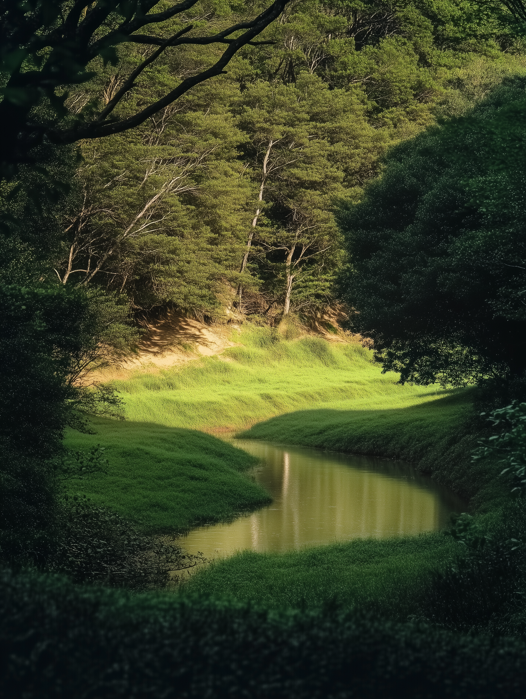
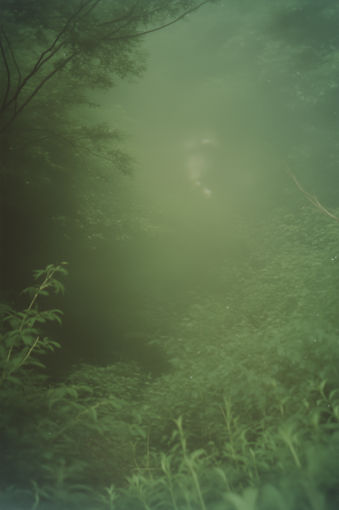
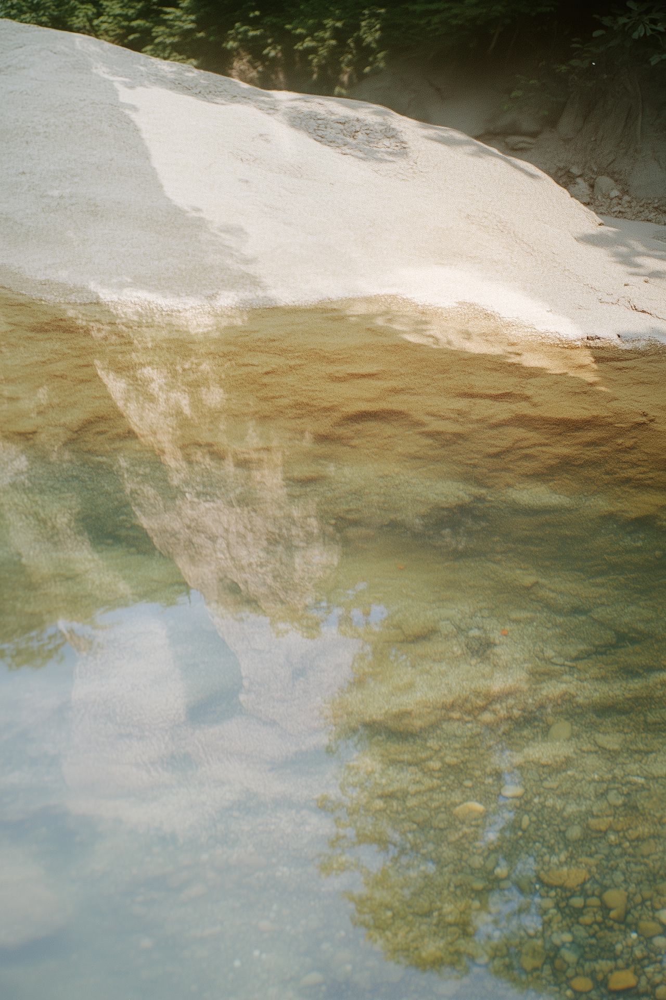
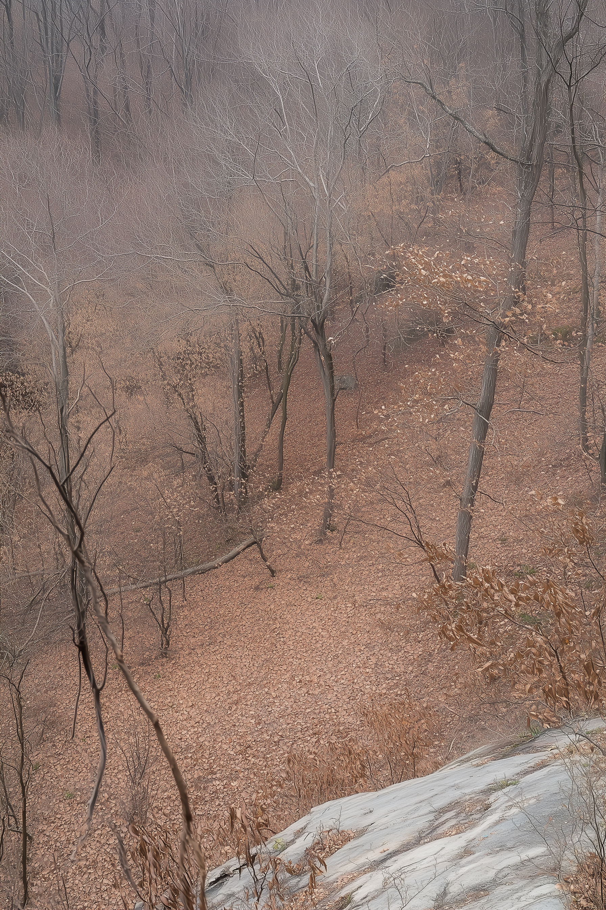
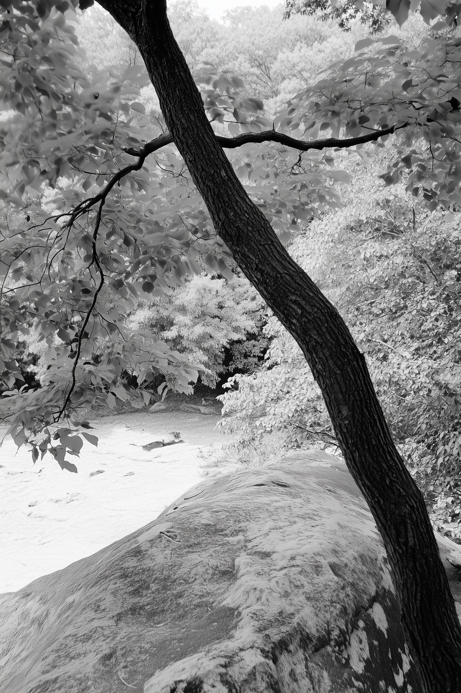
我在台中外埔成長，因為求學與工作，到北部的都市待了十年，之後回到台中的鄉下生活。因為這樣的環境轉換，我常常思考，這種都市與鄉下的二元性，對我來說有什麼意義。這種二元性，一方面滋養我，一方面我也持續地感覺到它們在我的心裡對峙著。莫約兩年前開始拿起相機之後，因緣際會下，我也正好離開上班族的生活，開始進行著一種，大家稱為「創作」的行為。 我一直隱隱約約覺得，我的身體正帶著我在探索些什麼。 在都市裡，人總是被人工創造的環境，比如說燈光、建築、人群、無止盡的資訊流等等所圍繞，在空間上以及心理上都製造了一種安全感。回到鄉下長期生活之後，我發現當那些人工的環境被剝除掉時，很像從一個防護罩走了出來，這些裸露出來的東西，是我以前從未發現的。 像是無目的般的田野調查，我總是帶著相機在所處的環境中遊蕩。相較陽光下的風光明媚，鄉下夜晚的野性、無秩序與攻擊性總是莫名吸引我。在夜晚，動植物變身成一隻隻的怪獸，工業用的大型機具在閃光燈的照耀下彷彿作勢要吞噬我，參與宗教儀式的人們幻化成一種非人的狀態，召喚著我一起進入。我知道那是幻覺，甚至只是攝影自有的特性造成的影像，但當我檢視手中的LCD螢幕時又不由自主地倒抽一口氣。 《夜遊》是關於直面環境時，無法迴避的一些感受，是我想表現回到鄉下後，在夜晚拍攝時，在過程中常常感受到的那股神秘、深沈甚至是有些危險的感覺。
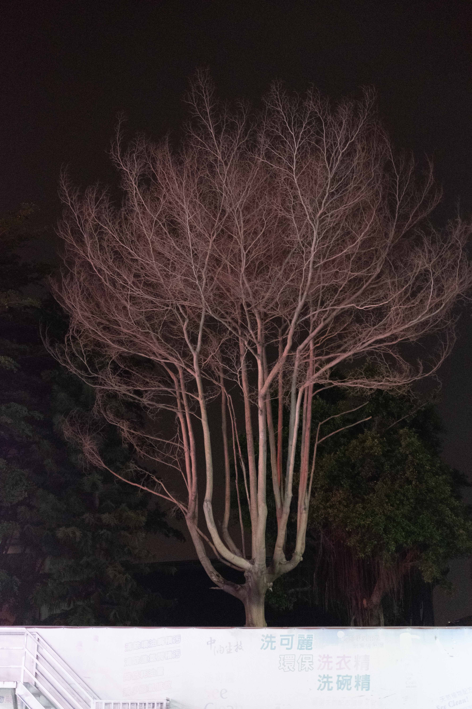
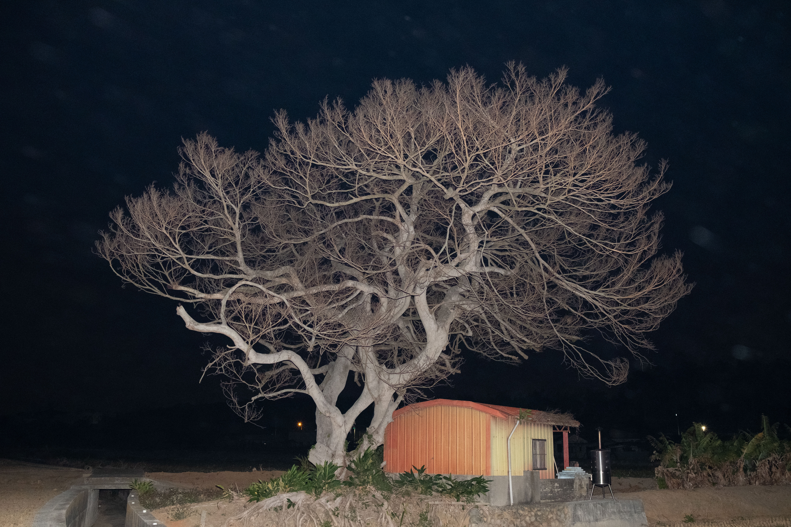
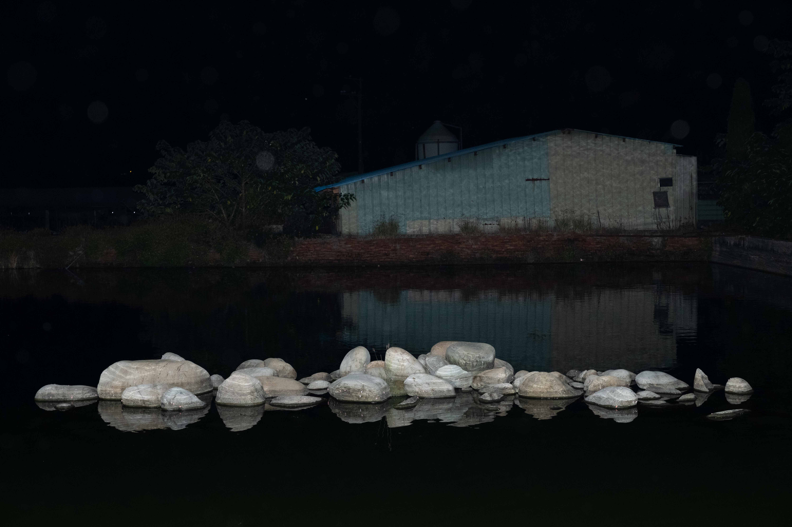
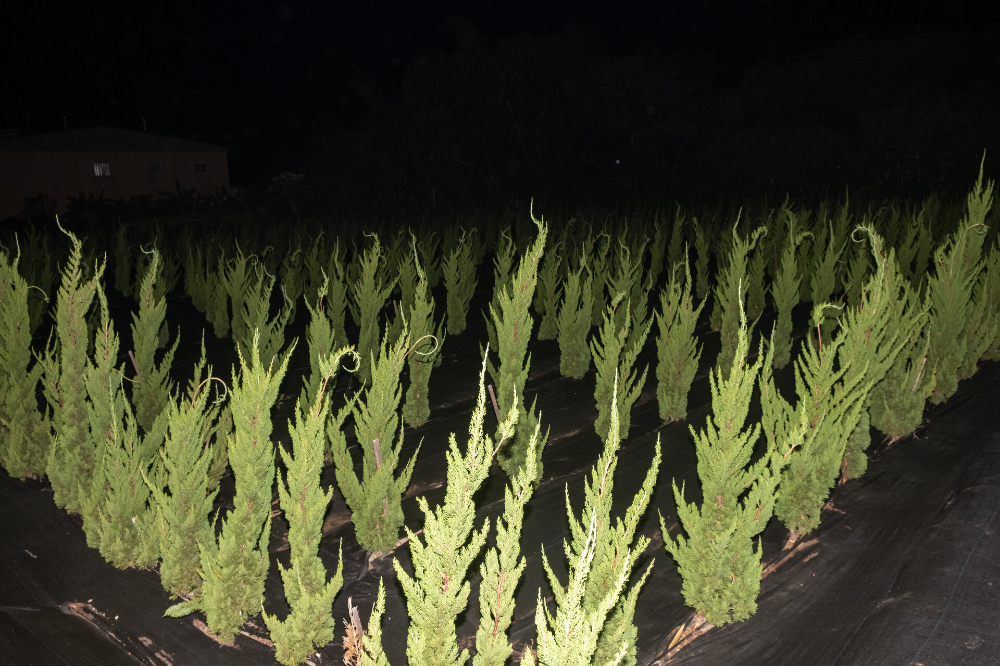
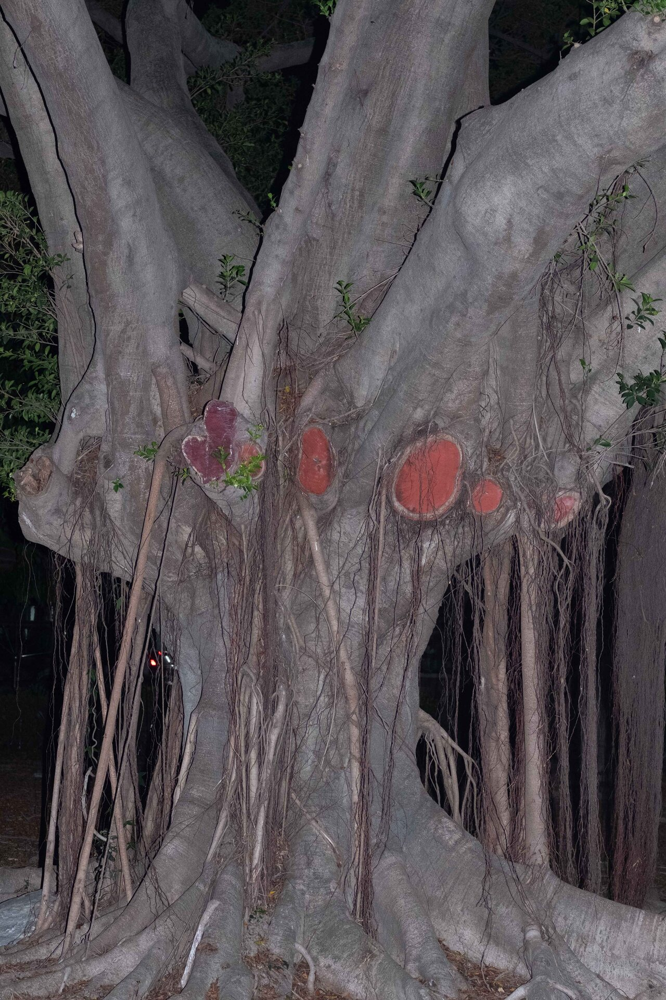
這本書始於我拍的狗系列，兩隻入鏡的土狗分別叫做小朋友與控肉，這四年來我與他們從無到有開發了好幾條在家裡附近的散步路線，從田野、草皮最後到森林，沿路還會遇到他們的很多狗朋友，好像他們帶著我去探險一樣。隨著時間的累積，在這個散步過程所累積的照片越來越多，便漸漸萌生了"把這些照片做成一本作品集吧"的想法。在編輯以及選照片的過程中，我意識到在這個散步路線上我不只拍了狗，我還拍了很多風景、植物、水、地等等自然的元素。隨著這個發現，我發現原來這個環境是一座山，我們這段時間都是在山上散步，我熟悉的二崁路不再是二崁路，而是蓬山。我在讀古地圖的時候，得知這個區域在清代之前叫做蓬山，但隨著土地的開發以及人口的移入，這邊漸漸地不再被認為是山而是一般的平地。我覺得與狗狗們的散步讓我回想起了這一件事：這是一座山。
延著這個思路，我開始試著把在散步路上的照片給放在一起，包含狗狗們與我們散步路上所拍的東西，也因此〈犬山記〉的雛形誕生了。
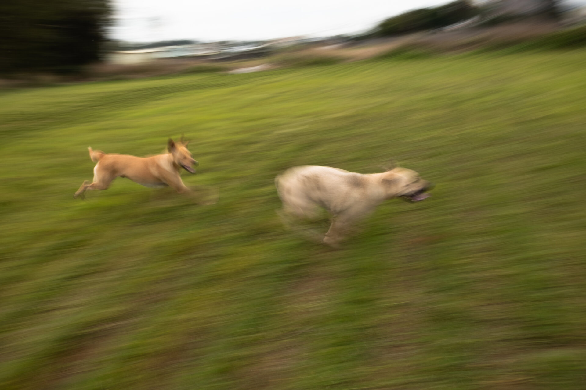
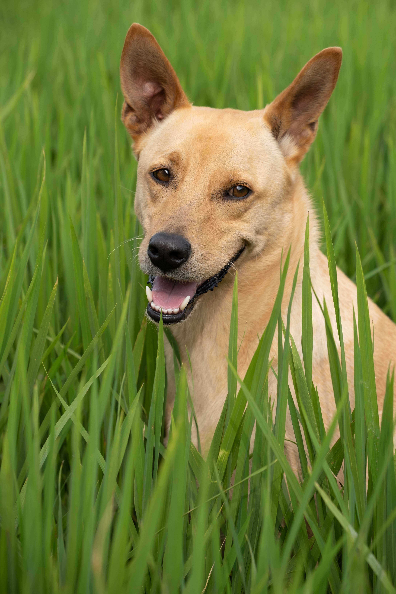
引言
本創作計畫源自我回到家鄉後，挖掘與作者外公家族 - 外埔許家有關的傳說、歷史、文學作品與老照片，並以攝影、書寫、文資保存等方式來與這個家族所留下的文化遺產互動。
鐵山誌的前世今生
2019年底，在許瑞承先生的牽線之下，由中央研究院李鍇揚博士所帶領的「臺中外埔許家文書數位化整編計畫」開始執行，並將研究成果導入文化部國家記憶庫。2020年，李博士於台北及台中各舉行一場公開講座「尋找黃金傳說：外埔許家發跡史與黑龍會的浪漫相遇」，我參與了台中場，在心中種下一顆探索文化資產的種子。2021至2022年，種種與外公家族相關的事件開始在我的生活周遭發生，牽引著我開始研究外埔與許家，並開始積極參與他們的家族活動，鐵山誌的雛形肇始於此時期的所見所聞及所學。2023年初，我以鐵山誌獲選吳東興攝影贊助計畫，並以書寫及影像創作來回應我挖掘到的這些地方文史材料。
個人經歷到創作靈感
在本展覽的第一部分，我以個人經歷出發，以一個外孫的角度書寫自己與外埔許家間的人際互動，以影像散文的方式書寫從外婆過世到認識母系家族世交等事件，以及這些事件如何讓我開始構思鐵山誌創作計畫。我以自身生活周遭為起點，書寫我連結到更大背景以及如何將這些遭遇轉化為創作的過程。
在地故事的重新轉譯
此部分我由一塊稱為「植物愛碑」的石碑出發，挖掘了外埔鳳梨園在日治時期的故事，並且透過影像、文史研究、書寫及參與發生在當代的事件來與這個故事互動，描述了外埔在日治時期的的經濟、政治及人文。
家族文學與歷史的視覺詮釋
接著，我以外埔許家成員的文學作品、碑文以及家族史等文本為靈感來源，以攝影去轉譯這些文本。我以《許氏家族史》所提到的清代遷移路線、貿易路線為軸心，在這些路線進行拍攝，同時也去呼應近百年前的古典漢詩、散文等許家成員的文學作品；將古典詩文中的內容、美學以攝影轉譯，創造一個跨越時空與媒材的對話。同時，我以古典漢詩集《鐵峰山房唱和集》為致敬對象，將前述影像集結，並借鑑古本的設計概念，製作攝影集《鐵峰山房唱和集》。
個人、歷史和未來的交織
期望這個計畫的多面性能呈現個人與歷史的相互交織，進而思考自身與周遭環境的連結。透過對自身所處環境的深挖，我探索了過去與現在的連結，同時也以創作來回應這些有形及無形的文化資產如何通往未來的可能。
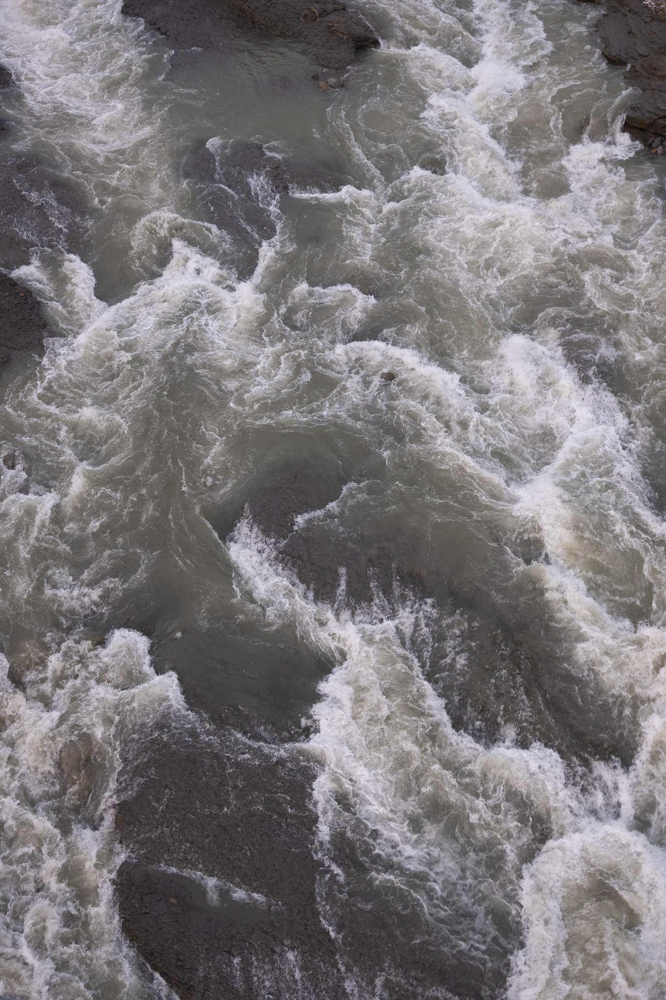
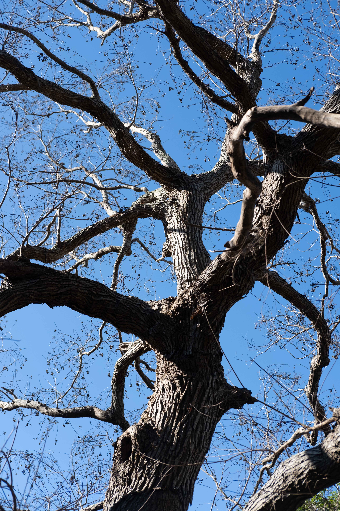
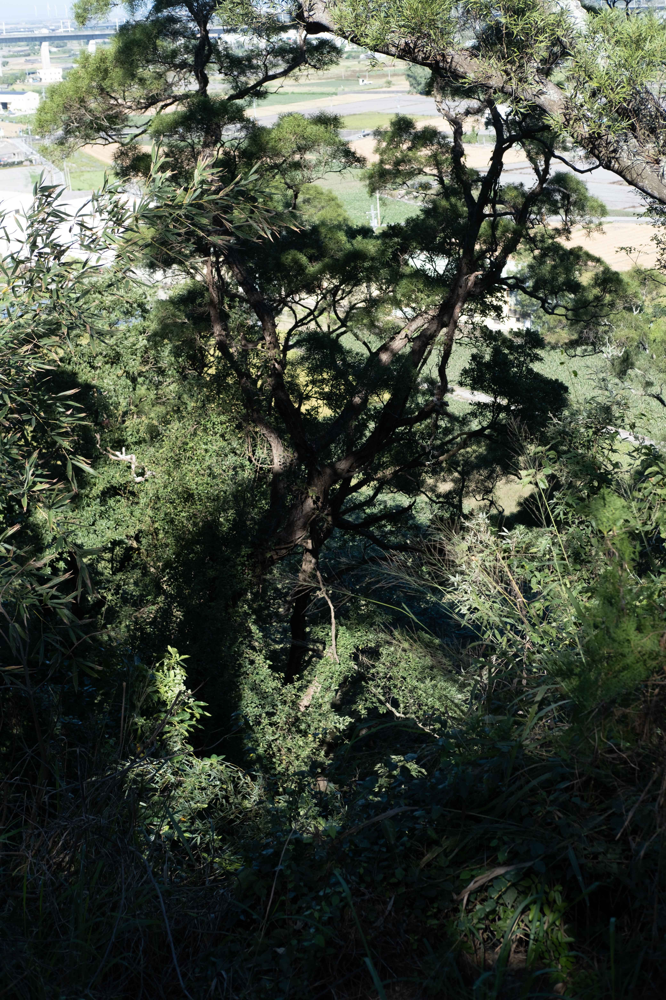
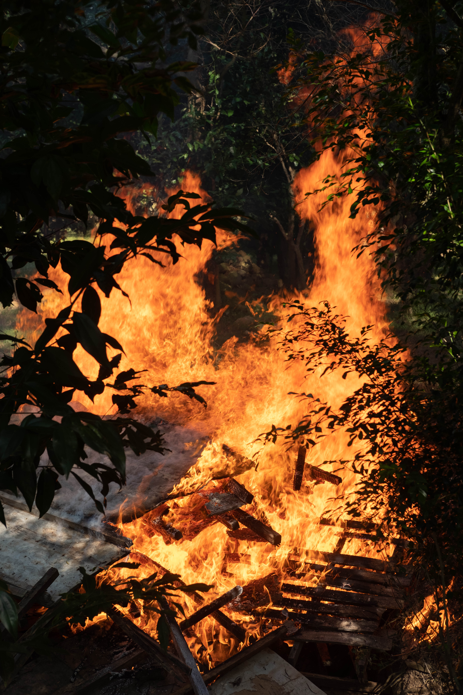
《模糊邊界 | Blurred Boundaries》的起源來自我對攝影與AI技術結合的思考。起初，我嘗試使用AI技術來重現傳統攝影中的「攝影感」，隨著探索的深入，我發現攝影圖像與 AI 生成圖像之間的邊界逐漸模糊，我開始意識到這種「模糊邊界」的存在。這些圖像既擁有逼近現實的視覺質感，又流露出足以察覺的扭曲，這正是作品名稱的由來。
圖像生產技術的迭代與成熟，迎來了數位圖像的寒武紀，人類的視覺經驗正經歷著莫大的改變。自攝影術發明以來，這項技術所衍生的圖像一直賦予我們一種潛在的「真實感」，因為它常被視為某個曾經存在的場景的再現，我們對攝影與現實之間的連結已經形成一種信任。而AI技術卻在挑戰這種信任。當AI生成的圖像模仿攝影的質感與構圖，甚至是模擬拍攝的過程時，這些圖像看起來像是真實的景觀，但在細節處流露出微妙的不協調感。這種「看似可能但又不完全合理」的張力，成為我探索的核心，它揭示了技術如何重塑我們的視覺經驗，並在現實與虛擬之間建立新的感知方式。
自然一直是我長期關注的創作主題，因此，我開始使用AI技術重新處理過去拍攝的自然景觀。自然充滿了抽象性——無論是樹木的紋理、山脈的形態，還是水流的動態，其複雜性和變化性正是AI技術所擅長處理的。原始的攝影圖像轉化爲 Token 送進生成模型中，AI 解構並重構這些自然元素，創造出一種既熟悉又充滿數位感的「虛擬自然」。這讓我不斷在「看起來像」與「真實存在」之間來回游移，探索技術邊界如何塑造我們對自然的感知。
隨著虛擬自然的建立，一個新的形象逐漸浮現——「數位高士」。此靈感來自中國傳統的「高士圖」，這些畫作描繪了隱士在自然中冥想、修行，尋求精神上的平靜。「數位高士」象徵著那些在數位時代中隱居於虛擬自然的人，不再依賴真實的自然環境，而是在數位空間中尋找精神歸屬。這些「數位高士」或許像傳統的隱士一樣，在虛擬景觀中漫遊、冥想，與一個無法觸及的數位世界建立內心聯繫；也許他們只是安靜地棲居於虛擬自然的角落，試圖在那裡找到某種心靈上的平衡。
《模糊邊界 | Blurred Boundaries》是一次技術上的嘗試，同時也希望能對當代視覺文化提出一些思考。AI 生成的圖像模糊了虛擬與現實之間的界線，在某種程度上挑戰了我們對圖像、自然與真實感的既有認知。這個創作最初只是單純地想探索 AI 技術與攝影的結合，但隨著過程的推進，它逐漸帶出了對傳統與現代、物質與精神、科技與自然等各種邊界的思索。透過這個作品，我希望能夠提供一個契機，讓觀者在虛實交織的圖像中，重新思考我們在數位時代的處境，以及自身與自然、技術之間的關係。
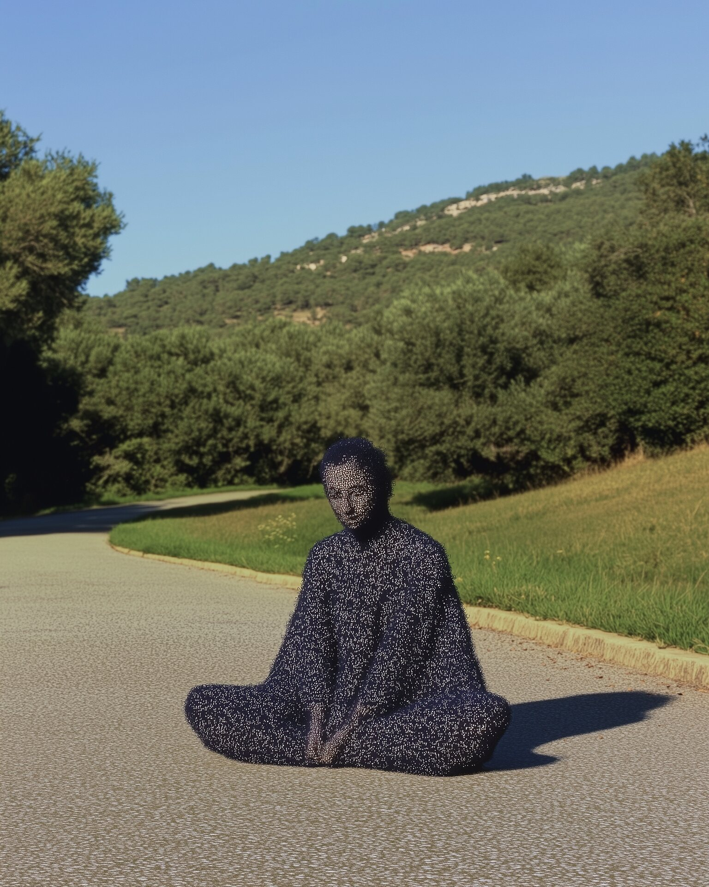
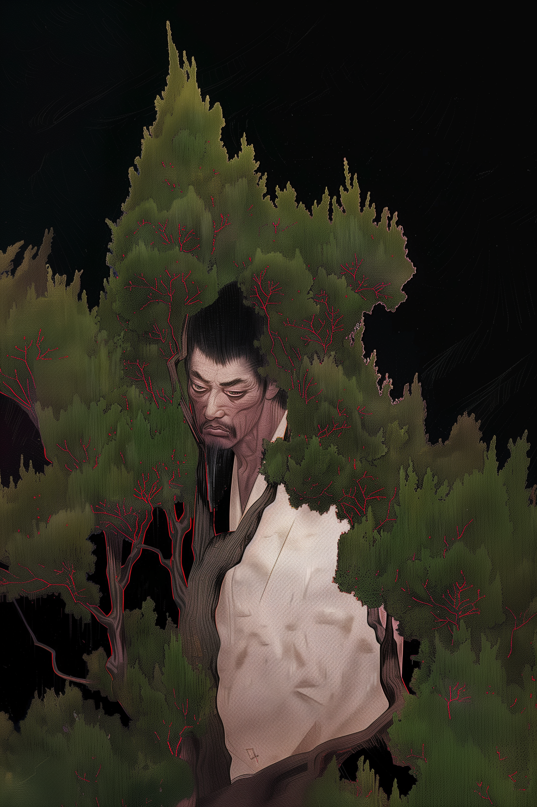
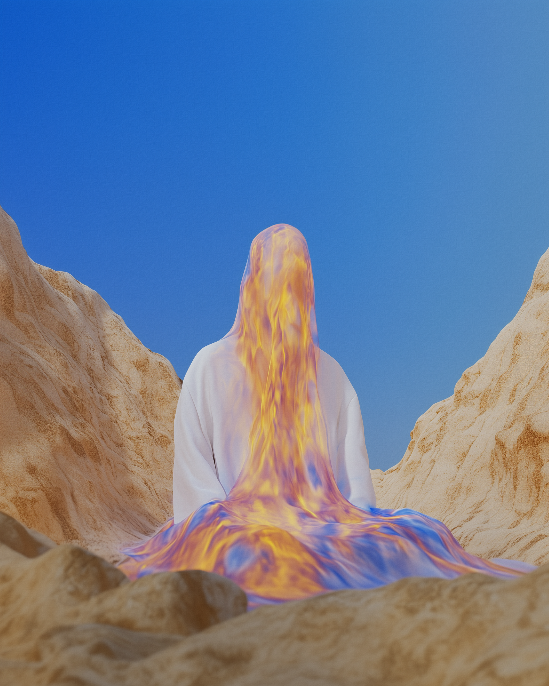